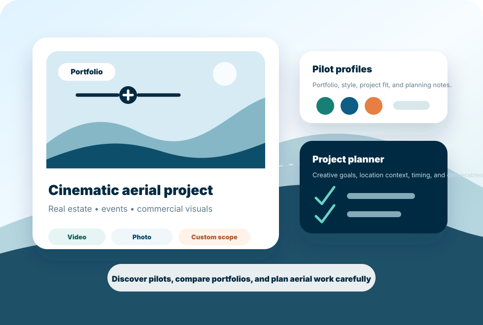

Find Drone Pilots
Browse aerial creators by portfolio style, project category, location context, and availability for review.
Premium drone videography marketplace
Higher Drones helps clients discover skilled drone pilots, explore aerial portfolios, compare services, and book cinematic photography and video for real estate, events, commercial work, and custom projects.

About
Higher Drones is a drone videography marketplace that connects clients with skilled aerial pilots for professional photography, video, and custom aerial projects. It exists to make professional aerial photography and videography easier to discover, compare, and book.
What you can do on Higher Drones
Browse aerial creators by portfolio style, project category, location context, and availability for review.
Review examples of cinematic property, event, commercial, and outdoor work before deciding who fits your project.
Start a planning request with your project goals, timing, location context, and desired deliverables.
Compare service scopes by deliverables, creative needs, project complexity, and review-dependent requirements.
Outline uncommon aerial needs so a project can be reviewed before scope, timing, or capture assumptions are discussed.
Understand what to prepare, what details to keep private, and what needs review before aerial work is planned.
Brand story
Aerial content can turn a property, event, campaign, or location into a stronger visual story. Higher Drones is built around the moment before the shoot: compare creative style, clarify the project, understand the deliverables, and plan responsibly before production begins.
Services
Service pages are designed to make aerial content easier to compare. Every request remains subject to project review, location context, creator availability, and practical constraints.
Cinematic exterior photography and video planning for listings, showcases, developments, and property storytelling.
Project planning for outdoor event coverage, recap footage, sponsor visuals, and venue context where appropriate.
Aerial content planning for local businesses, hospitality, tourism, construction, and product storytelling.
Creative aerial requests that need extra review before scope, timing, deliverables, or production assumptions are discussed.
Pilot profiles
Profiles should help clients understand visual style, portfolio categories, project fit, and planning expectations. Any pilot-specific availability or operating details must be confirmed during project review.
View Pilot PortfoliosBooking
Booking starts with a planning request: project type, creative goal, general location context, timing, and intended use. The page does not confirm scheduling or assign creators automatically.
Book a ShootGallery
Gallery examples should help clients evaluate composition, movement, light, and storytelling style. Real customer media should only be published with permission.
Exterior context, landscape, approach shots, and location storytelling.
Scale, movement, outdoor context, venue setting, and recap-friendly visuals.
Brand presence, site context, tourism, hospitality, and campaign visuals.
Pilot resources
Pilot resources should help creators present portfolios, clarify project fit, prepare client-facing details, and understand marketplace expectations without promising approval or placement.
Open Pilot ResourcesTrust and safety
Trust starts with clear scope, permission-aware media use, privacy-conscious communication, and review before project planning. Higher Drones does not promise operating approvals, credentials, coverage status, or capture outcomes from the public site.
Learn About Higher DronesTrust and safety
Higher Drones keeps the public experience focused on portfolios, service comparison, project planning, and careful request preparation rather than internal business models or complex software workflows.
Ready to see it from above?
Begin with the project type, creative goal, general location context, timing, and intended use. Keep private property or customer details out of the first message.